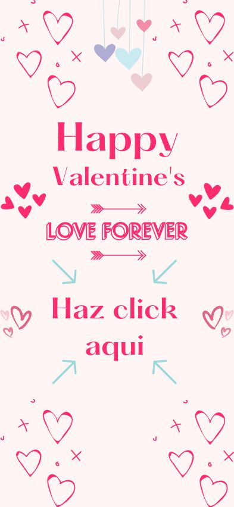
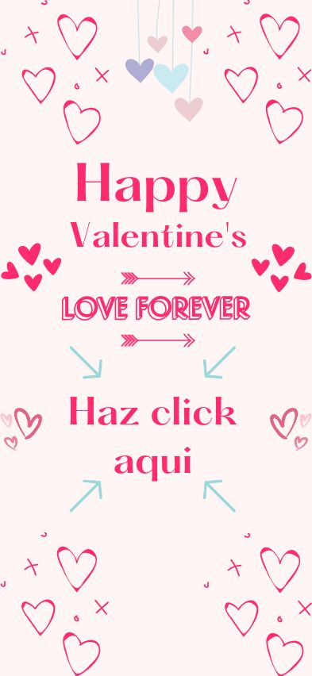

Amor, gracias por cada momento juntos.❤️
Hoy es nuestro primer 14 de febrero juntos,
Estar a tu lado es como descubrir un lugar donde todo tiene sentido,
donde cada risa, cada abrazo, cada beso y cada mirada se vuelven momentos que jamas quiero olvidar.
Eres lo mejor que me ha pasado y no puedo evitar sonreír cada vez que pienso en ti.
Me haces sentir amado, comprendido y afortunado de tener a alguien tan maravillosa en mi vida
Somos una historia que no quiero que termine jamas, quiero estar contigo en esta y en todas mis vidas.
Gracias por todo lo linda que eres conmigo, quisiera decirte el como me siento por ti pero...
No hay palabras suficientes para expresar todo lo que siento por ti, te amo demasiado.

 
